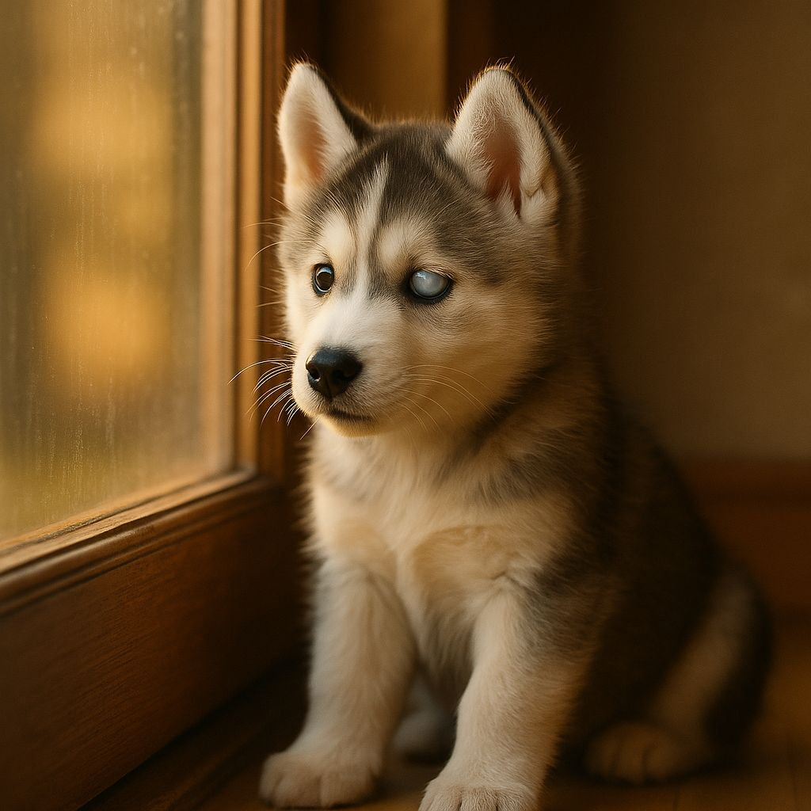
Edad: 2.5 Meses.
Raza: Husky siberiano.
Discapacidad: Ceguera en un ojo.
Personalidad: Elegante, observadora y tranquila.
Curiosidad: Pasa horas mirando por la ventana.
Ideal para: Personas pacientes y amorosas.
“Kira ve el mundo a su manera, con el corazón. Su mirada, mitad sombra y mitad luz, guarda la calma de quien ha aprendido a confiar. Adóptala y deja que te enseñe a mirar diferente.”
Edad: 4 años.
Raza: Labrador.
Discapacidad: Cola cortada bruscamente (bien cicatrizada).
Personalidad: Aventurero, alegre y leal.
Ideal para: Personas activas que aman la naturaleza.
“A Max le falta parte de la cola, pero le sobra amor, energía y nobleza. Fue rescatado de la crueldad, y aun así, cada día elige confiar y mirar el horizonte con esperanza.”
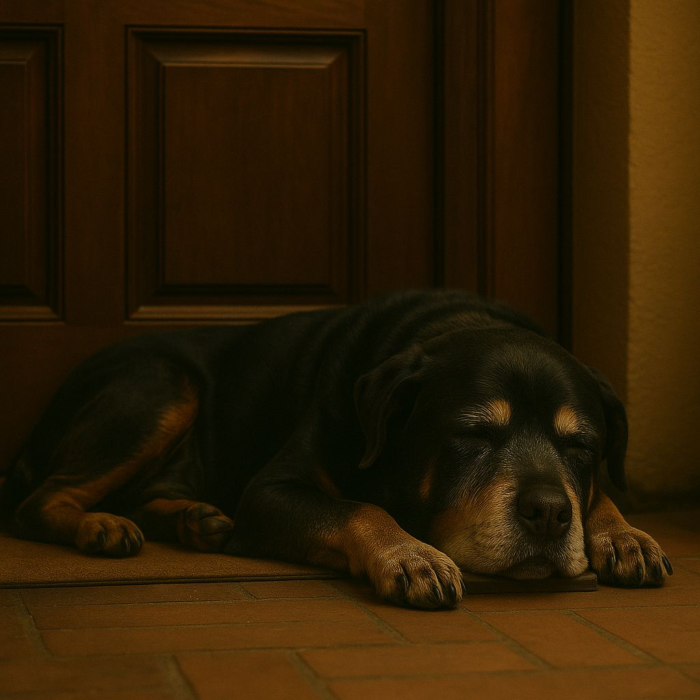
Edad: 11 Años.
Raza: Rottweiler.
Discapacidad: Sordera parcial.
Personalidad: Noble, valiente y protector.
Curiosidad: Duerme frente a la puerta todas las noches.
Ideal para: Hogares que busquen compañía fiel.
“Rocky no necesita oír para sentir. Cuida con el corazón, duerme junto a la puerta y sueña con un hogar donde su silencio sea paz y su lealtad, compañía eterna.”
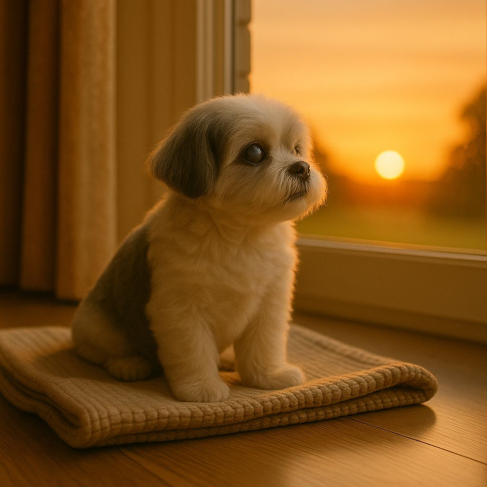
Edad: 4 Meses.
Raza: Shih Tzu.
Discapacidad: Ceguera parcial.
Personalidad: Dulce, amorosa y tranquila.
Curiosidad: Reconoce la voz de su persona favorita al instante.
Ideal para: Hogares serenos con mucho amor.
“Lulu no necesita ver para reconocer el cariño. Ella sigue la voz del corazón y solo busca un lugar donde amar y ser amada sin condiciones.”
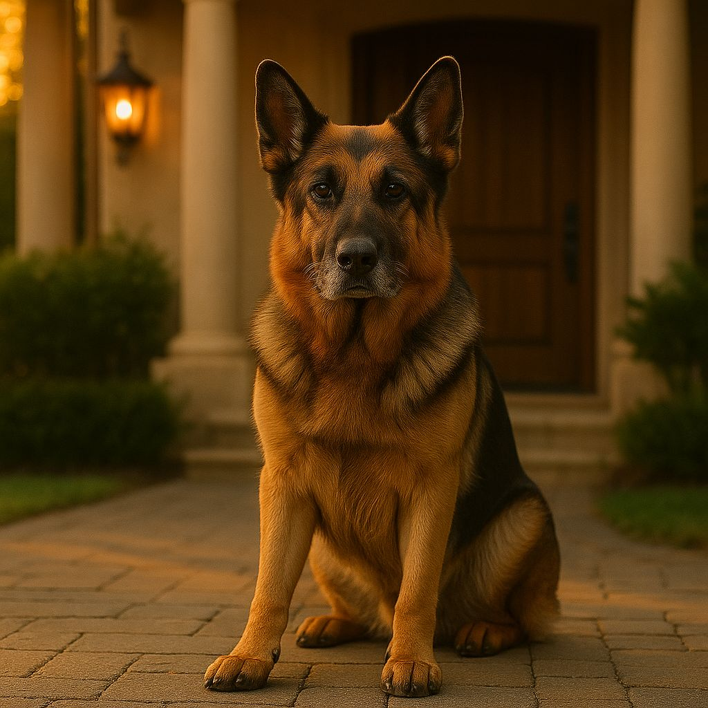
Edad: 6 Años.
Raza: Pastor Alemán.
Personalidad: Protector, fuerte y sereno.
Curiosidad: Solo ladra cuando es necesario.
Ideal para: Familias con experiencia en perros grandes.
“Thor impone respeto, pero también ternura. Detrás de su porte fuerte hay un corazón inmenso. Leal, tranquilo y noble: el guardián que convierte una casa en hogar.”
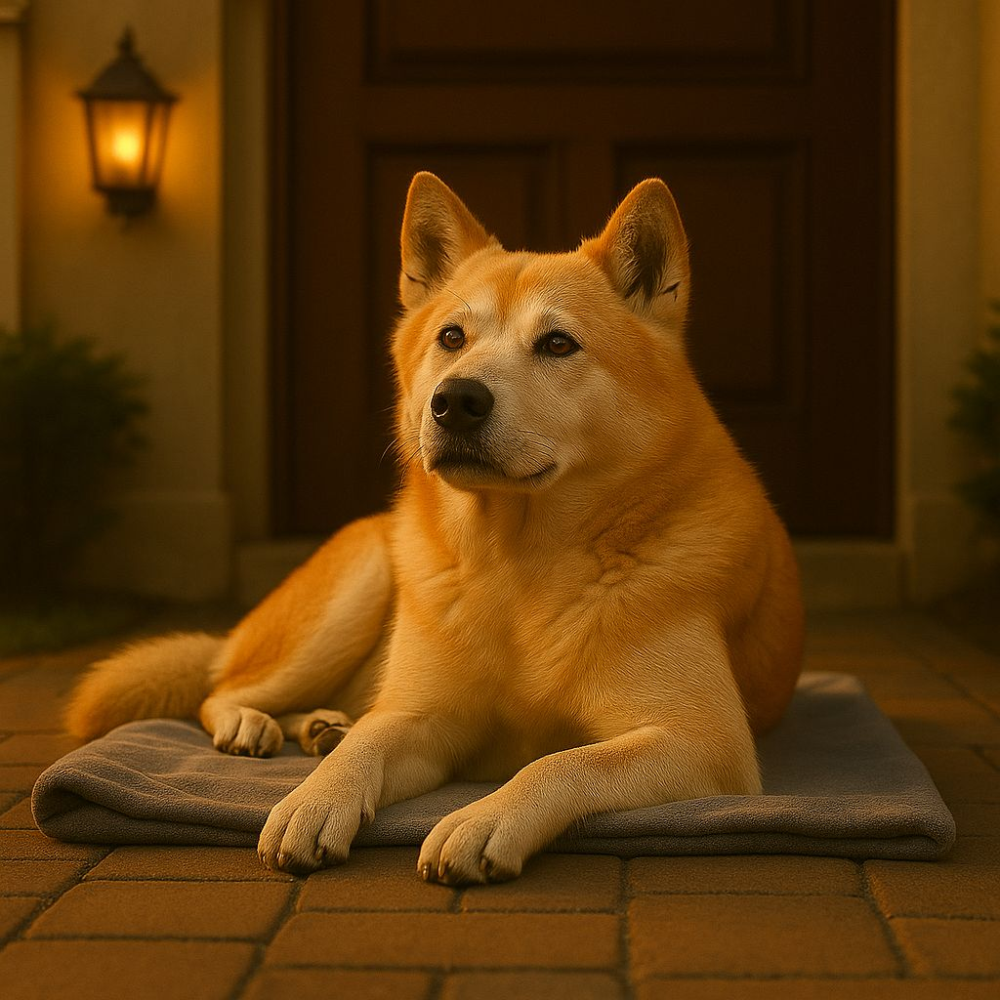
Edad: 8 Años.
Raza: Akita Inu.
Personalidad: Leal, tranquilo y noble.
Curiosidad: Espera cada día junto a la puerta a su humano.
Ideal para: Personas solas o parejas que busquen conexión profunda.
“Hachiko no ama a medias. Su fidelidad es absoluta, su mirada eterna. Si lo adoptas, tendrás un guardián del alma que nunca se irá de tu lado.”
Edad: 5 Meses.
Raza: Beagle.
Personalidad: Traviesa, curiosa y cariñosa.
Curiosidad: Ama esconder calcetines.
Ideal para: Familias alegres o personas activas.
“Nala no solo roba calcetines… también corazones. Es pura energía, risas y amor en movimiento. Perfecta para llenar tu casa de vida y tus días de aventuras.”
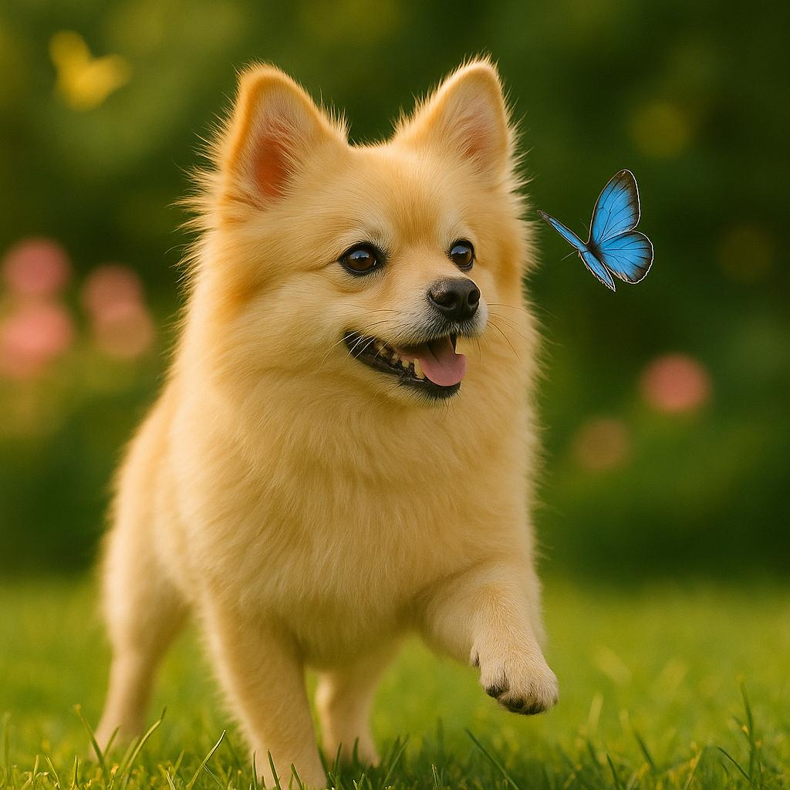
Edad: 3 Años
Raza: Pomerania.
Discapacidad: Leve cojera en una patita.
Personalidad: Curiosa, juguetona y extrovertida.
Curiosidad: Persigue las mariposas como si cada una fuera una nueva amiga.
Ideal para: Personas que buscan compañía alegre.
“Bella cojea un poquito, pero su corazón corre más rápido que nadie. Es una bolita de amor que solo quiere jugar, reír y ser parte de una familia feliz.”
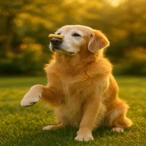
Edad: 9 Años.
Raza: Golden Retriever.
Personalidad: Sociable, obediente y cariñoso.
Curiosidad: Aprende trucos nuevos con rapidez.
Ideal para: Familias con niños o adultos mayores.
“Coco es esa presencia que ilumina la casa. Su alegría es contagiosa, su ternura infinita. Si lo adoptas, descubrirás que el amor cabe perfectamente en un pelaje dorado.”
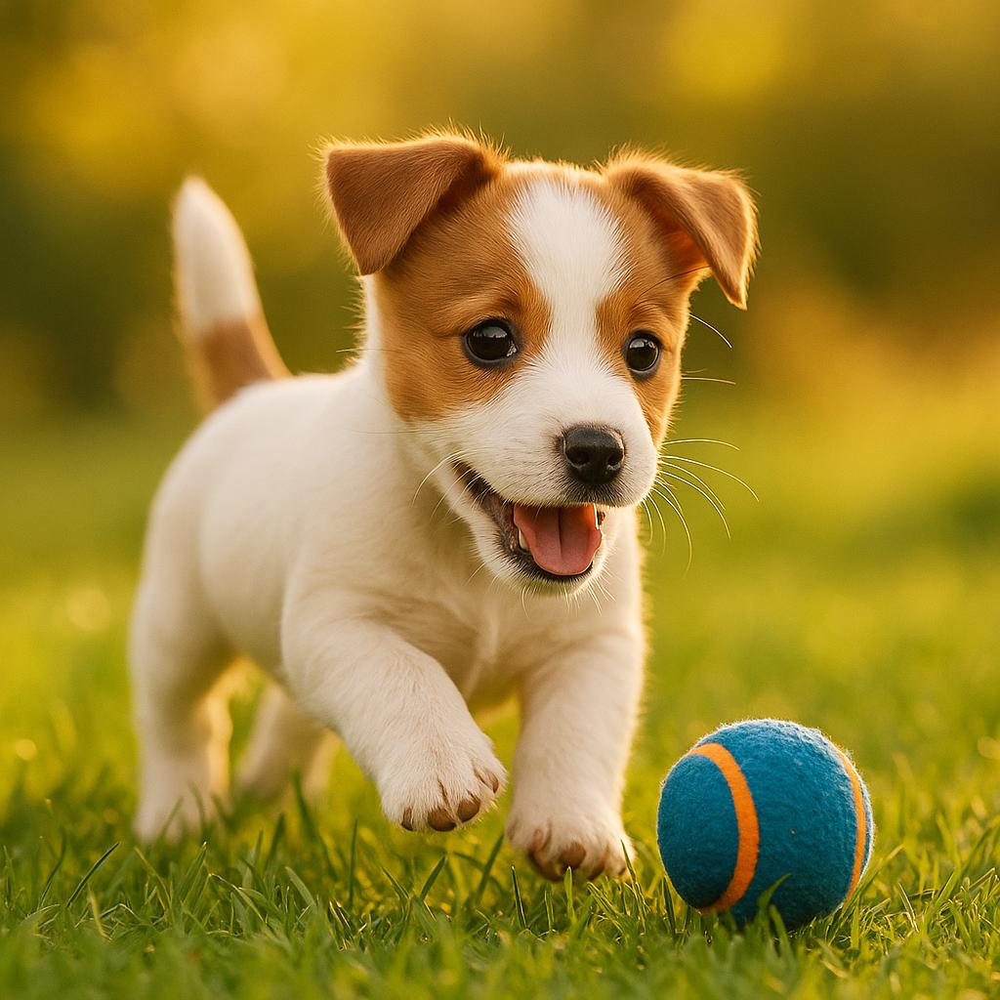
Edad: 6 Meses.
Raza: Jack Russell Terrier.
Personalidad: Alegre, inquieto y amistoso.
Curiosidad: No se separa de su pelota favorita.
Ideal para: Personas jóvenes y activas.
“Pipo es energía pura. Corre, salta, juega y siempre trae una sonrisa en el hocico. Si quieres días llenos de alegría, él está listo para acompañarte en cada aventura.”
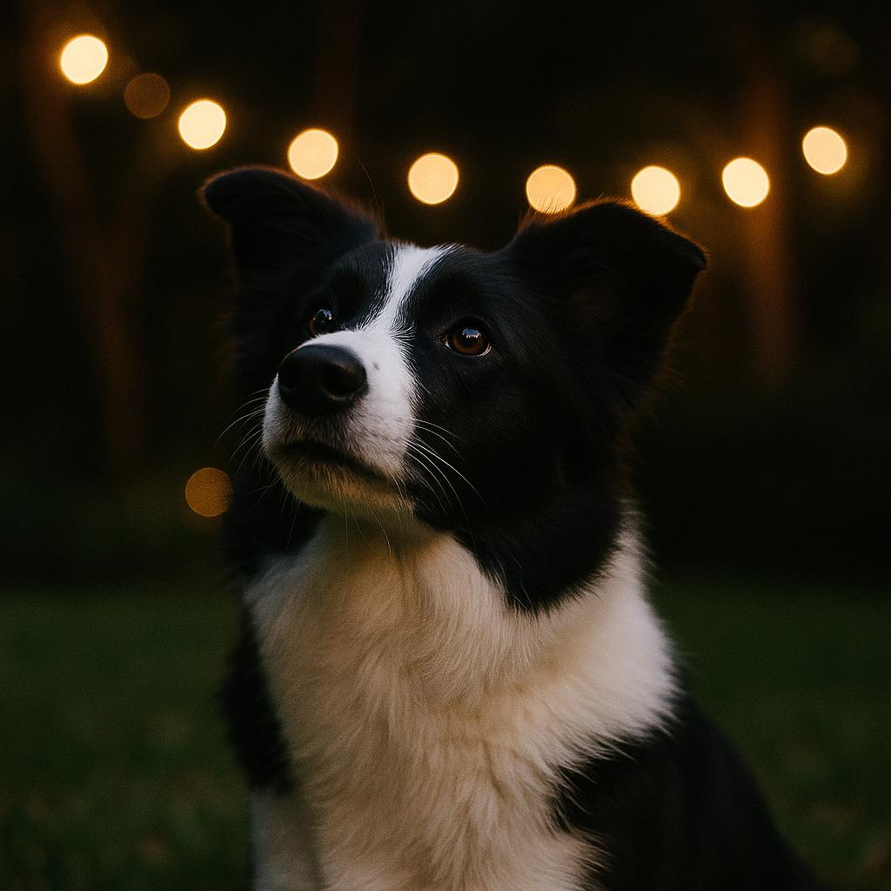
Edad: 3 Años.
Raza: Border Collie.
Personalidad: Dulce, protectora e inteligente.
Curiosidad: Se queda mirando las luces o estrellas cada noche.
Ideal para: Familias con niños o personas activas.
“Luna mira el cielo como quien busca promesas. Es dulce, leal y siempre atenta. Si la adoptas, nunca caminarás sola: ella siempre sabrá cuándo mirar contigo las estrellas.”
Edad: 10 Años.
Raza: Cocker Spaniel.
Personalidad: Sabio, calmado y fiel.
Curiosidad: Ama sus siestas al sol.
Ideal para: Adultos mayores o familias tranquilas.
“Toby ya no corre tanto, pero aún sabe dar los mejores paseos: los que se hacen despacio, con cariño. Él no busca aventuras, solo un sofá, un abrazo y alguien con quien compartir paz.”
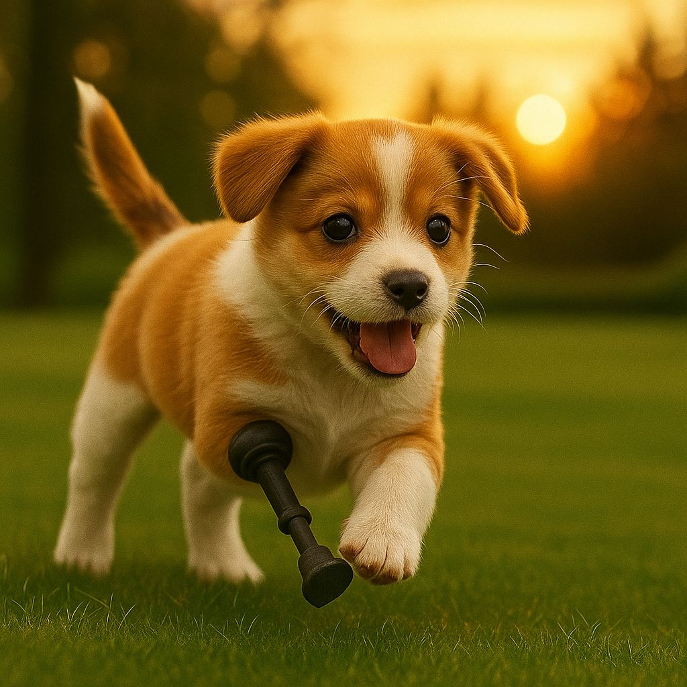
Edad: 3 Meses.
Raza: Mestizo tipo labrador con golden.
Personalidad:Alegre, fuerte y valiente.
Curiosidad: Usa su prótesis como si fuera una pata más.
Ideal para: Personas empáticas y activas.
“Simba perdió una patita, pero jamás su espíritu. Lo que le falta en una pierna, le sobra en corazón.”
Edad: 2 Meses.
Raza: Mestiza tipo terrier.
Personalidad: Dulce, obediente y mimosa.
Curiosidad: Se duerme escuchando música suave.
Ideal para: Familias o adultos que buscan calma y cariño.
“Nina es pura ternura. Si la abrazas, se acomoda y suspira. Su amor es sencillo y constante.”
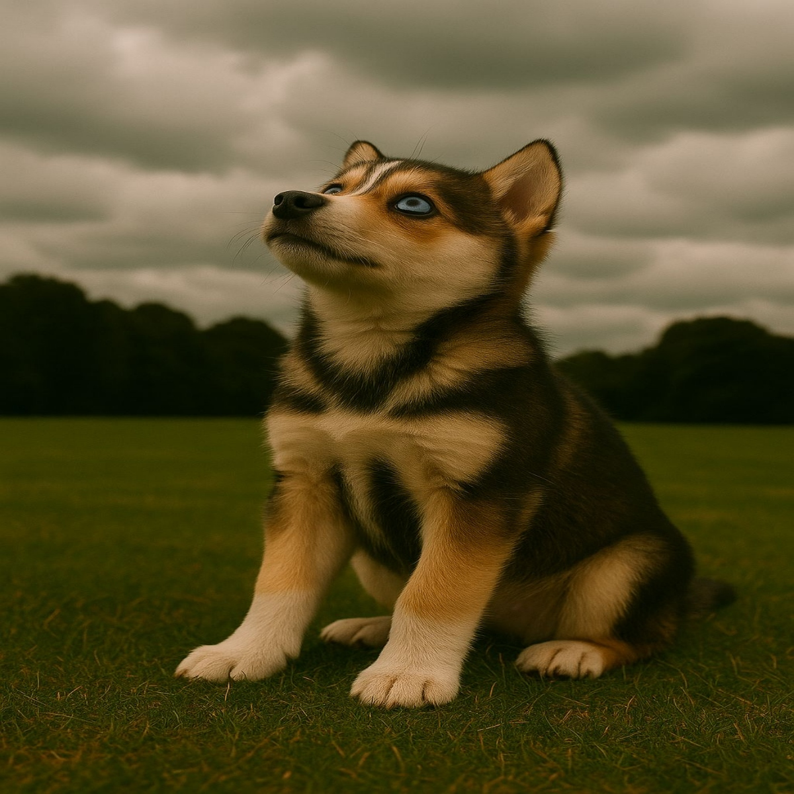
Edad: 4 Meses.
Raza: Mestiza tipo husky y collie.
Personalidad: Curiosa, inteligente y cariñosa.
Curiosidad: Mira las nubes como si contara historias.
Ideal para: Personas tranquilas que disfruten de la naturaleza.
“Nube observa el mundo con calma. No corre detrás del sol, lo refleja.”
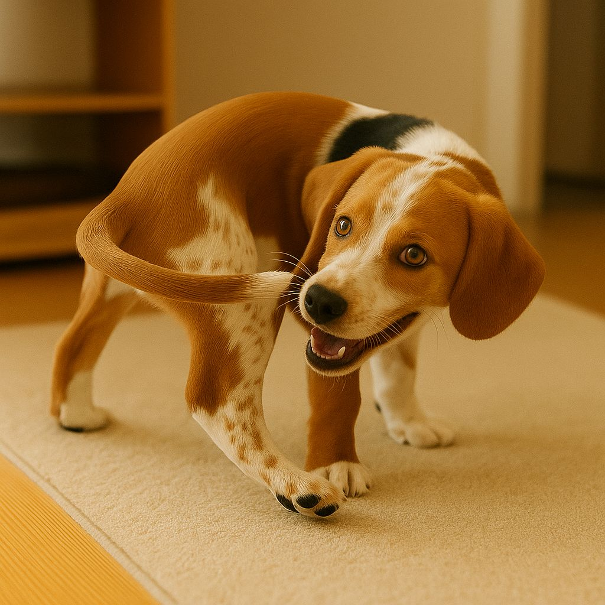
Edad: 7 Meses.
Raza: Mestizo tipo beagle con labrador.
Personalidad: Travieso, juguetón y extrovertido.
Curiosidad: Persigue su cola y ladra cuando se ve en el espejo.
Ideal para: Familias alegres o personas que disfruten de la diversión constante.
“Bongo no camina: brinca. Donde él pasa, hay risas, saltos y vida.”
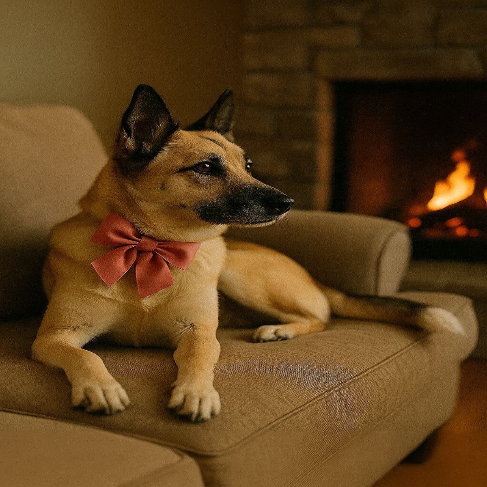
Edad: 6.5 Años.
Raza: Mestiza tipo pastor belga.
Personalidad: Leal, serena y atenta.
Curiosidad: Siempre se sienta junto a quien está triste.
Ideal para: Hogares con niños o animales; crea armonía a su alrededor.
“Mía tiene un corazón que calma. Es amor puro en forma de compañera fiel.”
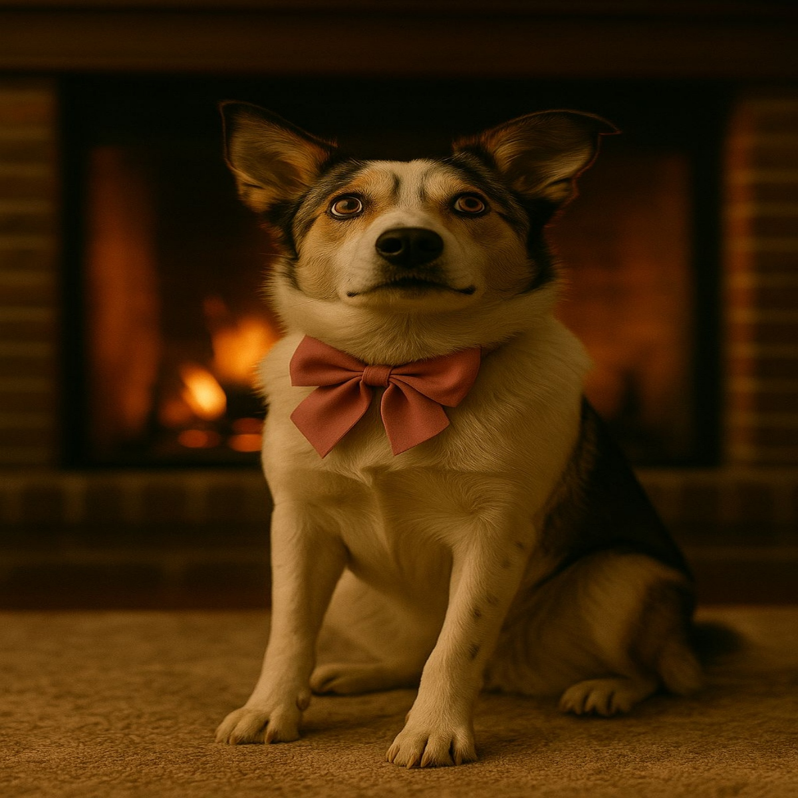
Edad: 3.8 Años.
Raza: Mestiza tipo border collie.
Discapacidad: Sorda parcial, entiende gestos.
Personalidad: Inteligente, sensible y fiel.
Curiosidad: Reconoce los pasos de su persona favorita antes de verla.
Ideal para: Personas pacientes y comunicativas.
“Tango no escucha palabras, pero entiende el alma. Su amor habla con el corazón.”
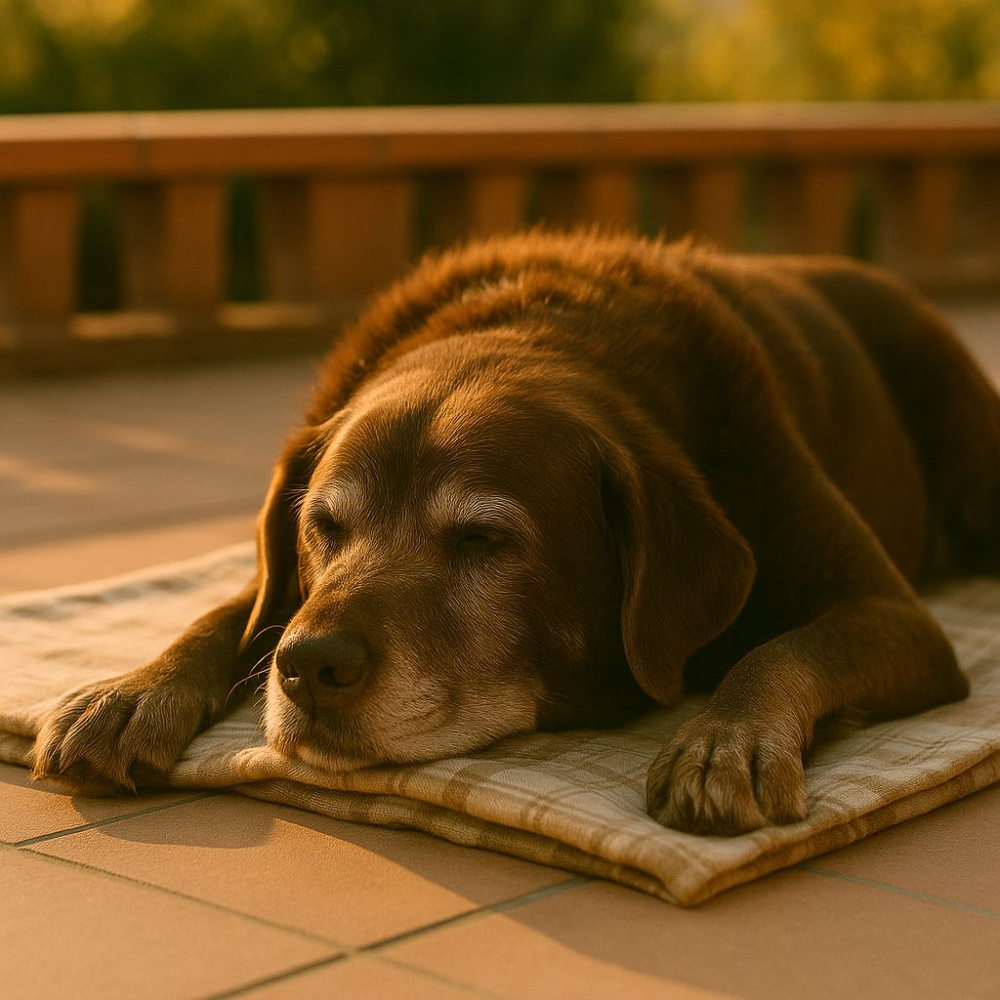
Edad: 12 años.
Raza: Mestizo tipo golden viejo.
Discapacidad: Artritis leve.
Personalidad: Sabio, tierno y paciente.
Curiosidad: Se duerme bajo el sol cada mañana sin falta.
Ideal para: Personas mayores o hogares tranquilos.
“Tao ya no corre tan rápido, pero todavía sabe disfrutar cada rayo de sol.”
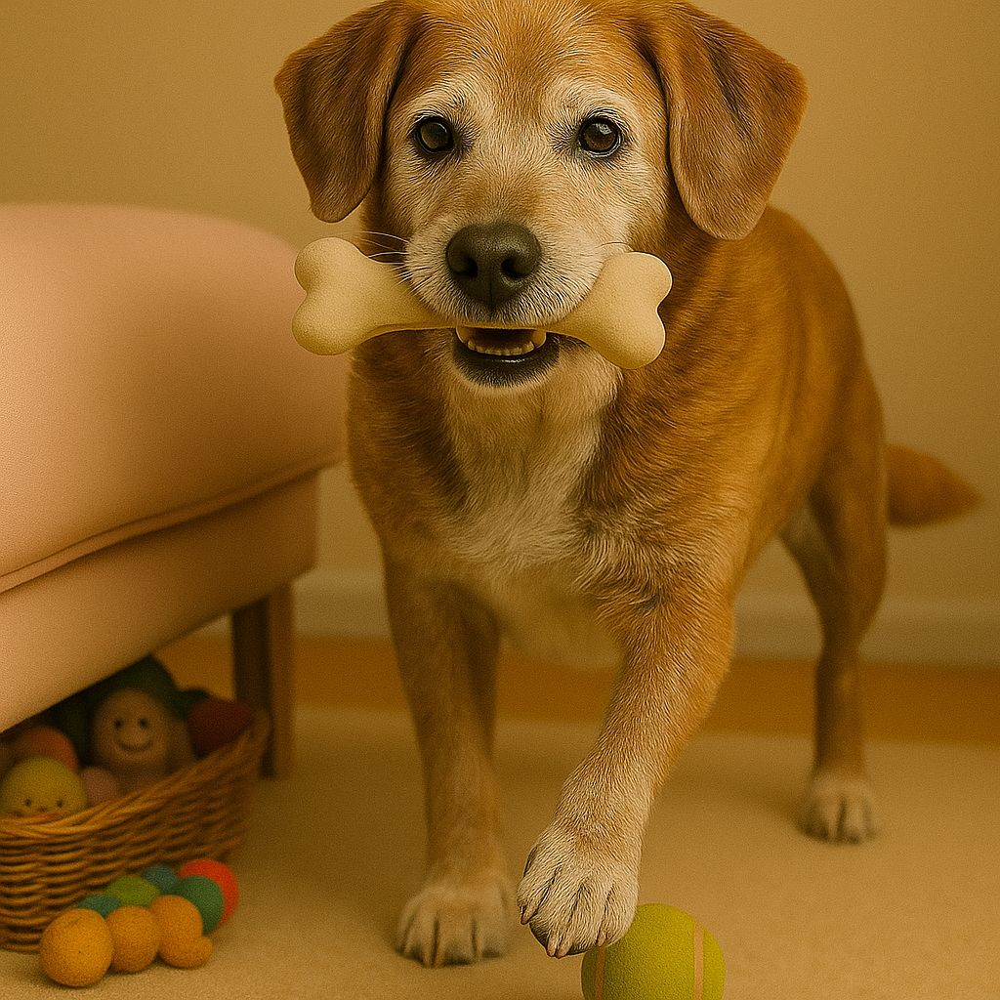
Edad: 9.6 Años.
Raza: Mestiza tipo Beagle con Labrador.
Personalidad: Protectora, leal y amorosa.
Curiosidad: Guarda sus juguetes favoritos bajo la cama.
Ideal para: Familias cariñosas con niños.
“Canelita es hogar. Calienta los días con su calma y su corazón inmenso.”
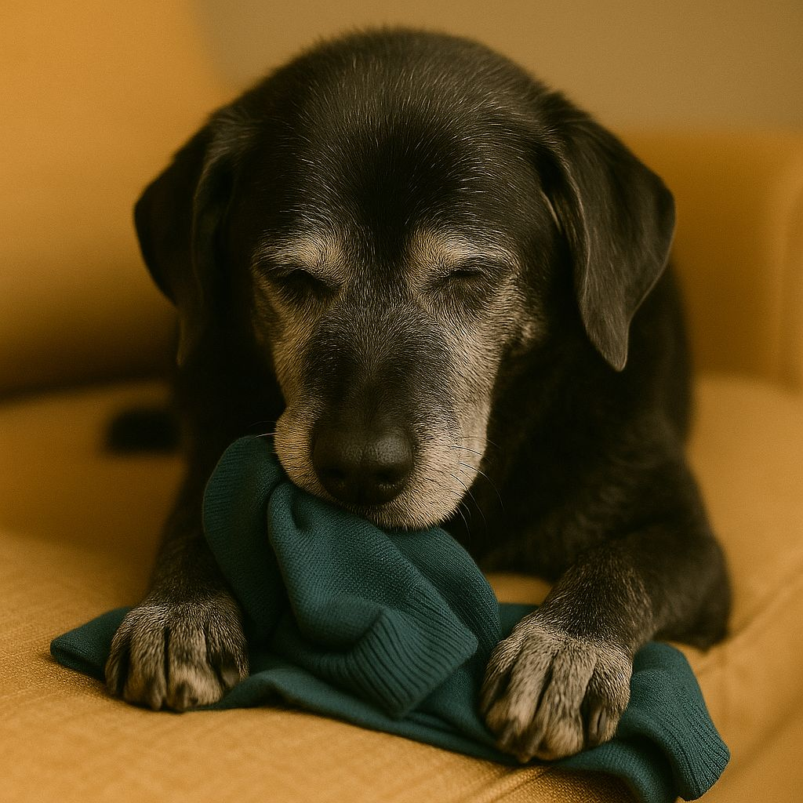
Edad: 13 años.
Raza: Mestizo tipo labrados con cocker.
Discapacidad: Ceguera total.
Personalidad: Sereno, sabio y cariñoso.
Curiosidad: Reconoce a las personas por su olor y sus pasos.
Ideal para: Personas calmadas que disfruten la quietud.
“Rocco no ve el mundo, pero lo siente todo. Su corazón es su brújula.”
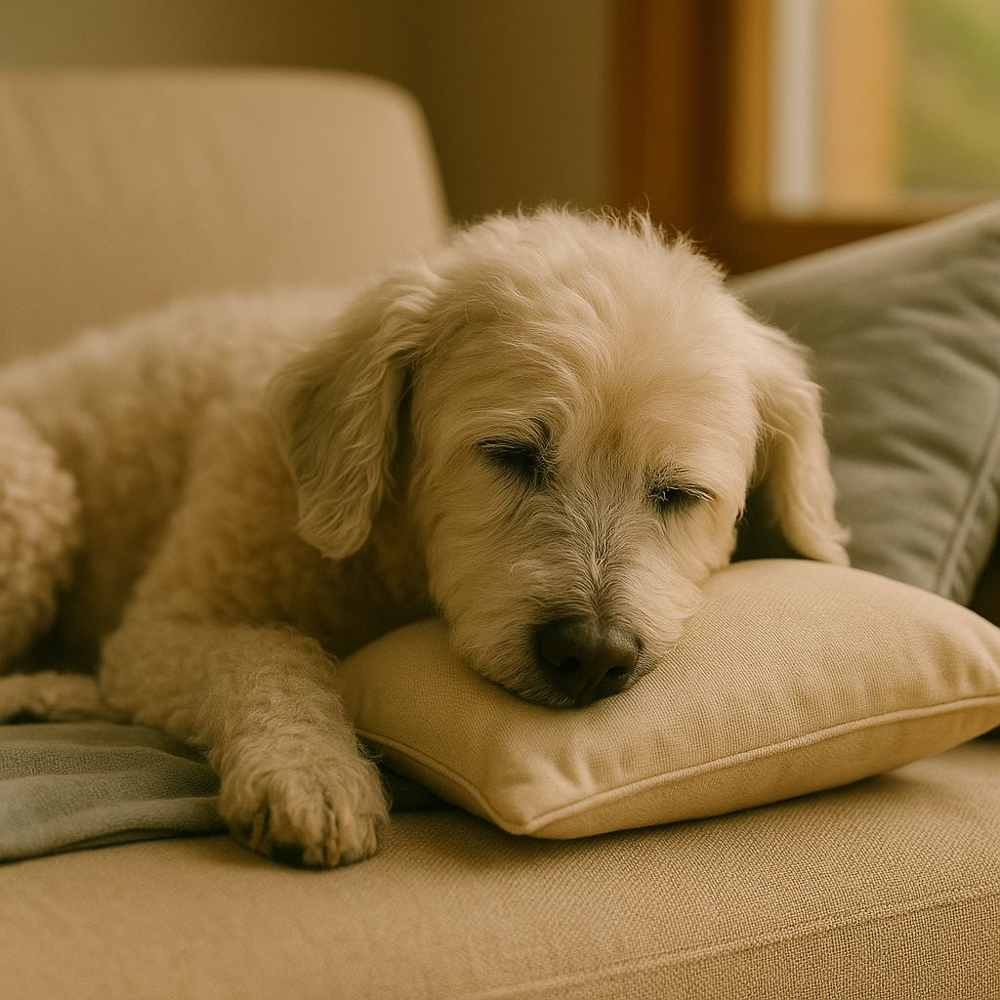
Edad: 11.7 años.
Raza: Mestiza tipo Poodle y bichón tipo golden viejo.
Discapacidad: Artritis leve.
Personalidad: Dulce, calmada y sabia.
Curiosidad: Ama dormir entre cojines y escuchar voces suaves.
Ideal para: Personas mayores o quienes busquen una compañía tranquila.
“Lua camina despacio, pero su ternura llega antes que sus pasos.”